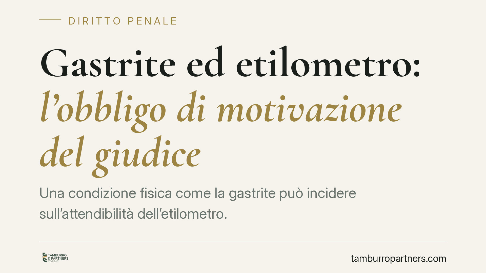

Gastrite ed etilometro: l'obbligo di motivazione del giudice
Una condizione fisica come la gastrite può incidere sull'attendibilità dell'etilometro. Una recente pronuncia della Sezione IV penale della Cassazione annulla una condanna per guida in stato di ebbrezza perché il giudice non aveva spiegato perché il tasso superasse la soglia penale nonostante il possibile effetto distorsivo della patologia. Il caso torna al giudice di rinvio.

Il caso
Un automobilista era stato condannato per guida in stato di ebbrezza sulla base della misurazione effettuata con l'etilometro. La difesa, con il supporto di un consulente tecnico, aveva eccepito che l'imputato soffriva di gastrite, condizione che — secondo la consulenza — poteva alterare la lettura dello strumento.
Secondo quanto riportato, la Cassazione (Sez. IV penale) ha annullato la condanna con rinvio, rilevando che il giudice non aveva motivato in modo adeguato perché il valore rilevato dovesse ritenersi affidabile e superiore alla soglia penale, pur a fronte della patologia dedotta.
> Nota di verifica. Il numero e l'anno della sentenza citati dalla fonte (n. 20966/2026) non risultano al momento confermabili. In attesa di riscontro ufficiale, facciamo riferimento alla pronuncia come «recente decisione della Sez. IV penale», senza richiamarne gli estremi.
Inquadramento normativo
La materia è regolata dall'art. 186 del Codice della Strada, che distingue più fasce in base al tasso alcolemico (TAC), espresso in grammi per litro di sangue:
- Fino a 0,5 g/l: nessuna sanzione.
- Da 0,5 a 0,8 g/l (art. 186, comma 2, lett. a): illecito amministrativo, non reato. Scattano sanzione pecuniaria e sospensione della patente, ma il procedimento resta in sede amministrativa.
- Oltre 0,8 g/l: reato, con due ulteriori fasce — da 0,8 a 1,5 g/l (lett. b) e oltre 1,5 g/l (lett. c), progressivamente più gravi.
La distinzione è decisiva: pochi centesimi di punto possono spostare la condotta da illecito amministrativo a reato, o da una fascia penale a quella successiva. Per questo l'affidabilità della misurazione non è un dettaglio.
Perché la gastrite entra nel processo
L'etilometro misura l'alcol nell'aria espirata e da lì stima la concentrazione nel sangue. Secondo parte della giurisprudenza e alcune consulenze tecniche, determinate condizioni gastriche — come il reflusso o fenomeni di fermentazione a livello gastrico — potrebbero introdurre alcol residuo nelle vie aeree superiori e, in teoria, influenzare la lettura.
È bene chiarire il punto: non si tratta di un dato scientifico incontestato, ma di un argomento tecnico che la difesa può dedurre e che il giudice è tenuto a valutare, soprattutto quando il valore rilevato è prossimo alla soglia penale.
Cosa dice davvero la pronuncia
La decisione non afferma che «la gastrite cancella la condanna». Afferma qualcosa di più preciso e meno sensazionale: quando la difesa deduce una condizione idonea a incidere sull'attendibilità della prova, il giudice non può ignorarla. Deve spiegare, con motivazione specifica, perché ritiene il dato affidabile nonostante l'eccezione sollevata.
L'annullamento con rinvio non equivale a un'assoluzione: il caso torna al giudice di merito, che dovrà pronunciarsi nuovamente colmando la lacuna motivazionale.
Implicazioni pratiche
Per chi è destinatario di una contestazione ai sensi dell'art. 186, la pronuncia conferma che la misurazione non è un dato incontrovertibile. I margini di contestazione sono diversi:
- la taratura e la revisione periodica dello strumento;
- l'intervallo temporale tra le due misurazioni previste dal protocollo;
- le condizioni fisiche del soggetto al momento del test.
Il rilievo è maggiore quando il valore è vicino a 0,8 g/l, perché lì si decide se la condotta è reato o illecito amministrativo, oppure in quale fascia penale collocarla.
Cosa fare in concreto
- Conserva ogni documento rilasciato al momento del controllo, compreso lo scontrino dell'etilometro con i valori e gli orari delle due misurazioni.
- Verifica che lo strumento risultasse sottoposto a taratura e revisione periodica valide.
- Raccogli la documentazione sanitaria relativa a eventuali patologie gastriche o terapie in corso.
- Fai esaminare la correttezza del protocollo di misurazione (intervallo tra le prove, modalità di esecuzione).
- Valuta un esame tecnico della misurazione fin dalle prime fasi del procedimento, quando le contestazioni possono essere introdotte con maggiore efficacia.
In questi procedimenti assume rilievo un'analisi tecnica della prova strumentale: la soglia penale si gioca spesso su scarti minimi, e la motivazione del giudice su tali punti è oggi oggetto di uno scrutinio più rigoroso.
---
*Contributo informativo a cura di Tamburro & Partners - Avv. Giuseppe Tamburro. Non costituisce parere legale.*
Ogni condominio ha una storia a sé.
Se gestisci un'amministrazione e vuoi un confronto su una specifica questione condominiale, scrivi allo studio. Ti rispondiamo entro un giorno lavorativo.